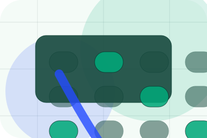
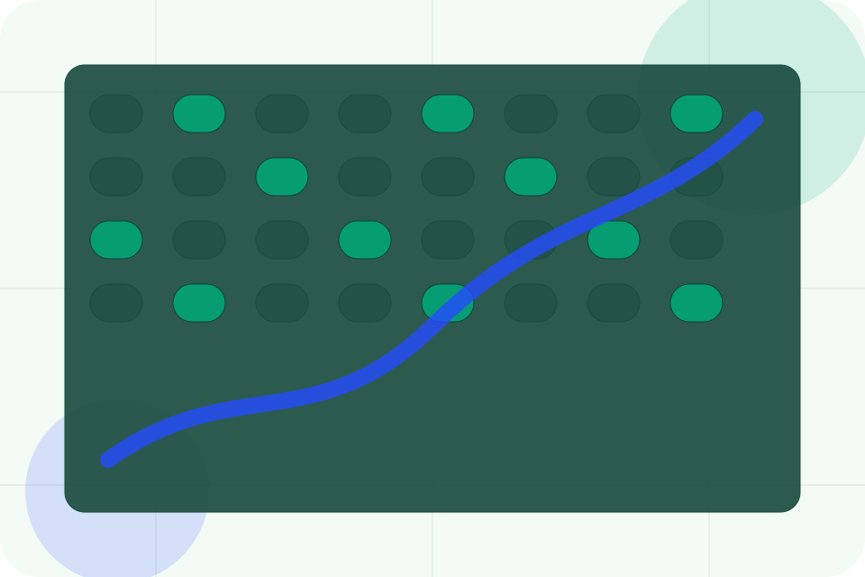
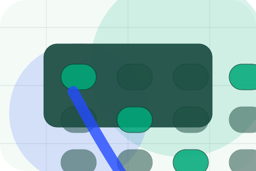
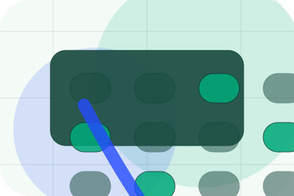
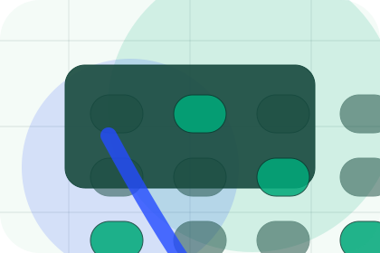
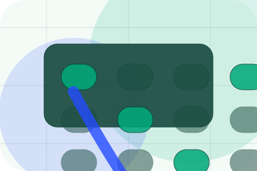
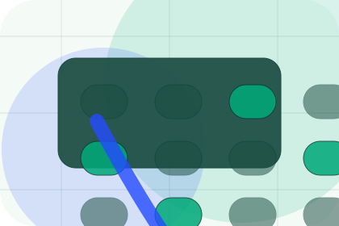
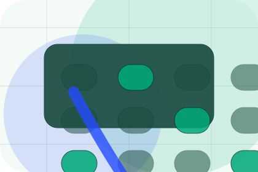
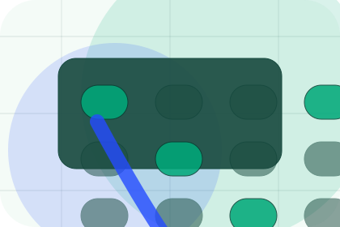
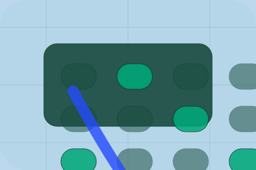

Pressure
Challenge names the real friction visitors bring to the projects route, so the page feels relevant before any claim is made.
Projects / 01
Projects opens as a clear environmental decision hub: what Terra offers, who it helps, why it matters, and which route to take first.
The first screen combines positioning, proof, primary action, and fast internal navigation, so people can act immediately or compare the rest of the projects route with context.
Emissions dashboard hero
Select the closest route and Terra keeps the next step, proof, and follow-up expectation aligned with accountability and measurable change.

Projects / 02
Challenge frames the pressure behind the visit, then connects it to a practical path visitors can recognise and act on.
The copy avoids blame and panic. It shows the common friction, the practical consequence, and the calmer route Terra uses to move people forward.
Explore Projects
Challenge names the real friction visitors bring to the projects route, so the page feels relevant before any claim is made.

The copy connects that friction to practical risk, delay, confusion, or missed opportunity without exaggerating it.

The final cue moves visitors toward a clearer route instead of leaving them with the problem alone.
Projects / 03
Intervention adds technical context to the projects route, using the climate data operating system structure to support accountability and measurable change before visitors choose a next step.
Terra uses carbon evidence cards and focused copy to make the decision easier to scan, aligning the section with accountability and measurable change rather than filling space.
Explore ProjectsIntervention gives the page a specific angle instead of repeating the navigation label.
The carbon evidence cards show what to compare, what to avoid, and what matters most for environmental, sustainability & climate services visitors.

The final cue points to a useful internal route so the section keeps the journey moving.
Projects / 04
Actions adds technical context to the projects route, using the climate data operating system structure to support accountability and measurable change before visitors choose a next step.
Terra uses carbon evidence cards and focused copy to make the decision easier to scan, aligning the section with accountability and measurable change rather than filling space.
Explore ProjectsActions gives the page a specific angle instead of repeating the navigation label.
The carbon evidence cards show what to compare, what to avoid, and what matters most for environmental, sustainability & climate services visitors.
The final cue points to a useful internal route so the section keeps the journey moving.
Projects / 05
Metrics shows what changes after the work: clearer decisions, visible progress, and proof points that connect the offer to real outcomes.
The layout connects before-and-after thinking with measured outcomes, making the result easy to scan without promising what the business cannot guarantee.
Explore ProjectsThe uncertainty, delay, or missed opportunity visitors bring into metrics.
The clearer, safer, or more valuable state Terra is designed to support.
The visible cue that connects metrics to a believable decision, not a loose claim.
Projects / 06
Outcomes shows what changes after the work: clearer decisions, visible progress, and proof points that connect the offer to real outcomes.
The layout connects before-and-after thinking with measured outcomes, making the result easy to scan without promising what the business cannot guarantee.
Explore Projects
The uncertainty, delay, or missed opportunity visitors bring into outcomes.

The clearer, safer, or more valuable state Terra is designed to support.

The visible cue that connects outcomes to a believable decision, not a loose claim.
Projects / 07
Lessons adds technical context to the projects route, using the climate data operating system structure to support accountability and measurable change before visitors choose a next step.
Terra uses carbon evidence cards and focused copy to make the decision easier to scan, aligning the section with accountability and measurable change rather than filling space.
Explore ProjectsLessons gives the page a specific angle instead of repeating the navigation label.
The carbon evidence cards show what to compare, what to avoid, and what matters most for environmental, sustainability & climate services visitors.

The final cue points to a useful internal route so the section keeps the journey moving.
Projects / 08
Reporting adds technical context to the projects route, using the climate data operating system structure to support accountability and measurable change before visitors choose a next step.
Terra uses carbon evidence cards and focused copy to make the decision easier to scan, aligning the section with accountability and measurable change rather than filling space.
Explore Projects
Reporting gives the page a specific angle instead of repeating the navigation label.
The carbon evidence cards show what to compare, what to avoid, and what matters most for environmental, sustainability & climate services visitors.

The final cue points to a useful internal route so the section keeps the journey moving.
Projects / 09
Proof shows what changes after the work: clearer decisions, visible progress, and proof points that connect the offer to real outcomes.
The layout connects before-and-after thinking with measured outcomes, making the result easy to scan without promising what the business cannot guarantee.
Explore ProjectsThe uncertainty, delay, or missed opportunity visitors bring into proof.
The clearer, safer, or more valuable state Terra is designed to support.
The visible cue that connects proof to a believable decision, not a loose claim.
Projects / 10
Terra closes the projects route with a clear action, a quick reminder of the value, and a low-friction way to book an audit.
Visitors who are ready can use the primary action. Visitors who are still comparing can scan the section links, proof, and support routes before they book an audit.
Book AuditThe final block keeps the choice simple: act now, compare one more proof route, or send enough detail for a focused response.
Book Auditaccountability and measurable change
A climate-accounting site with emissions dashboards, report proof, methodology panels, and audit CTAs. Projects ends with a direct path to book an audit, plus enough context for visitors who still need to compare.

Book AuditInformation is provided for planning and should be reviewed for the final client, location, and operating rules.